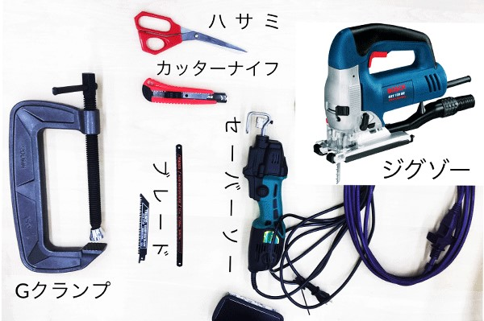
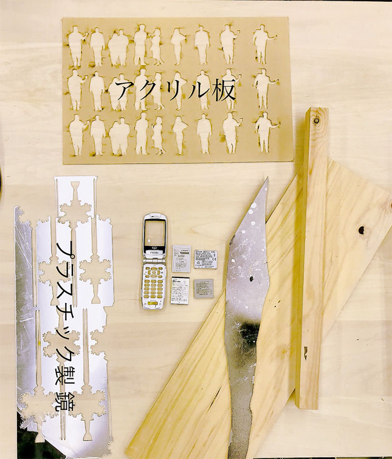

素材。材料学演習
切断班
自分がしたこと...
・素材を実際に切る ・切った時の感想を詳細に伝える
使用した道具
・ハサミ ・カッターナイフ ・ブレード ・セイバーソー ・ジグソー ・Gクランプ
使用した材料
・アクリル板 ・プラスチック製鏡 ・鉄板 ・木材、当て木 ・携帯のバッテリー
アクリル板

切りにくかったので、当て木をした。当て木なしでは激しく上下に動いた
鉄板

セイバーソーで切れた。とても切りにくかった（写真は断面）

とても切りにくかった。
木材

ハンドソーでは少し時間がかかった。セイバーソーが一番切りやすかった。
プラスチック製鏡

ハサミで切ろうと試みた。が...切れたというより割れた...
先生からのご指導

長尾先生から発泡スチロールの切り方を教えてもらった

コツはハンドソーであまり力を入れず早くこするようにするときれいに切れる

きれいに切り取れた正方形の発泡スチロール
ワークショップ

２人の人に自分のイニシャルをセイバーソーで切り取ってもらうワークショップ
自分は切り取る人の補佐を行った。 体験者がセイバーソーでの使い方を知らなかったから、 文字を板に書くところから切りにく書き方をしていたところを改善した方がいい思った。